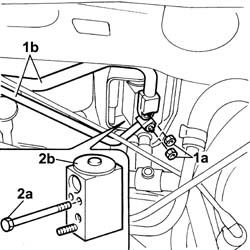
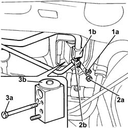
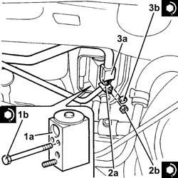

5040B30 expansion valve (tube orifice) - r+r
- Path
- Procedures > 50 AUXILIARY UNITS > 5040 AIR CONDITIONING CASING AND COMPONENTS > 5040B system safety check devices > 5040B30 expansion valve (tube orifice) - r+r
- Kind
- repair procedure (removal / refitting; the operation number is the code)
- Applies to
- all engines; all production periods
- Interactive page
- https://sloeber94.github.io/elrnDB-fDbl/en/#/2584833
Applies to: all engines; all production periods
 Removing
Removing
 Refitting
RefittingOp. 5040A10 AIR CONDITIONING REFRIGERANT CIRCUIT - DRYING AND REPRESSURIZING
Disconnect the battery negative terminal.
1. Undo the fixing nuts (1a) and disconnect the high and low pressure pipes (1b), expansion valve side.
2. Undo the bolts (2a) and remove the expansion valve (2b).

Applies to: all engines; all production periods
Refitting
RemovingFit the expansion valve and secure it with the bolts.
Connect the high and low pressure pipes and secure them to the expansion valve with the relevant nuts.
Connect the battery negative terminal.
Op. 5040A10 AIR CONDITIONING REFRIGERANT CIRCUIT - DRYING AND REPRESSURIZING
Applies to: engines: 1.9 JTD 8V; all production periods
Removing
RefittingEnsure that the ignition key is in the stop position, then disconnect the battery negative terminal.
 | Name | Connector |
|---|---|---|
- | Battery |
Proceed with the removal
Op. 5520C20 HEATER PLUGS CONTROL UNIT - R.R.
Drain the air conditioning system
Op. 5040A10 AIR CONDITIONING REFRIGERANT CIRCUIT - DRYING AND REPRESSURIZING.
1. Undo the nut (1a) and disconnect the pipe from the evaporator to the compressor inlet pipe (1b), expansion valve side.
2. Undo the nut (2a) and disconnect the pipe from the drier filter to the expansion valve (2b), expansion valve side.
3. Undo the bolts (3a) and remove the expansion valve (3b).

Applies to: engines: 1.9 JTD 8V; all production periods
Refitting
Removing1. Place the expansion valve (1a) back in its housing and fix it tightening the bolts (1b) to the recommended torque.
 | Fastening | Component | Ø | Value (daNm) |
|---|---|---|---|---|
1b | - | - | - | - |
2. Connect the pipe from the drier filter to the expansion valve (2a), expansion valve side and tighten the nut (1b) to the recommended torque.
| Fastening | Component | Ø | Value (daNm) |
|---|---|---|---|---|
2b | Nut | PIPE FRM FILTER/DEHYDRATOR TO EXPAN VALV | M6 | (Expansion valve side) 0.7 ÷ 1.1 |
3. Connect the pipe from the evaporator to the compressor inlet pipe (3a), expansion valve side and tighten the nut (3b) to the recommended torque.
| Fastening | Component | Ø | Value (daNm) |
|---|---|---|---|---|
3b | Nut | PIPE FROM EVAPORATOR | M6 | (Expansion valve side) 0.7 ÷ 1.1 |

Applies to: engines: 1.9 JTD 8V; all production periods
Refill the air conditioning system
Op. 5040A10 AIR CONDITIONING REFRIGERANT CIRCUIT - DRYING AND REPRESSURIZING.
Proceed with the refitting
Op. 5520C20 HEATER PLUGS CONTROL UNIT - R.R.
Connect the battery terminal (-).
Topics linked from this page (3)
- 5040A10 Air conditioning refrigerant CIRCUIT - Draining and Refilling
- 5520C20 Heater plugs CONTROL UNIT - R.R.
- A1B BATTERY ( BATTERY POSITIVE )